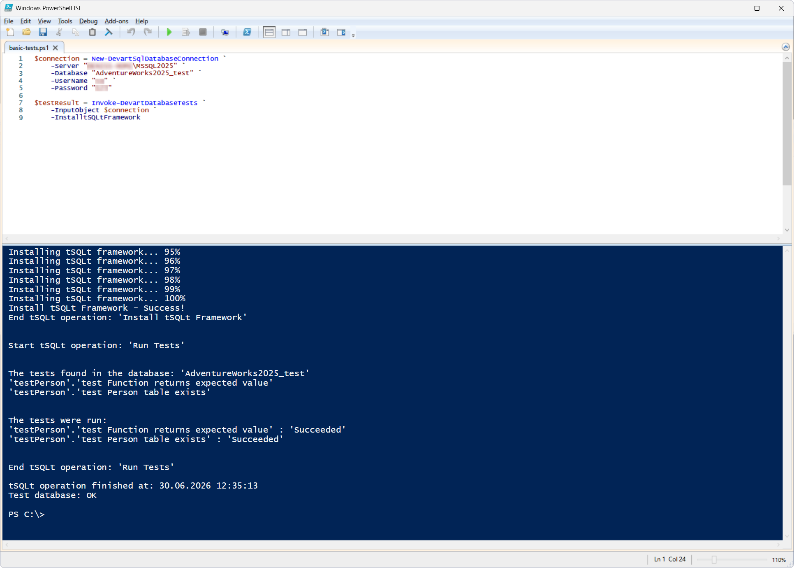
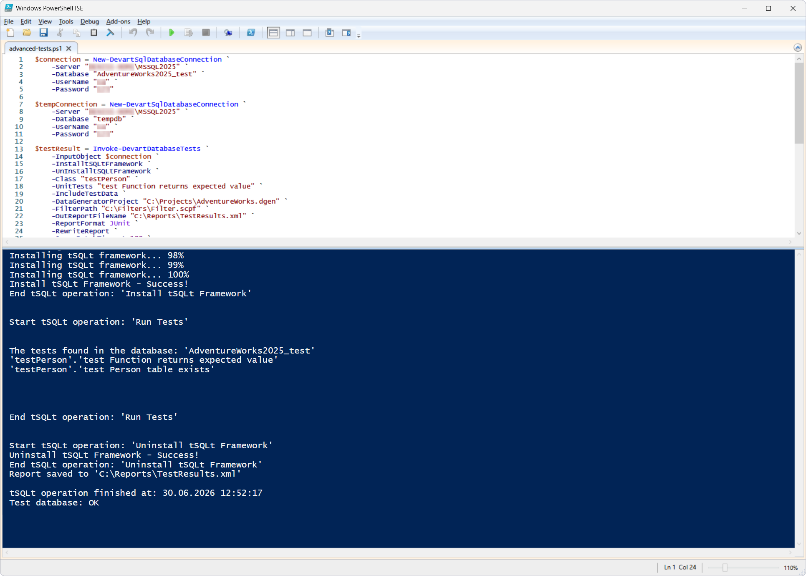

The Invoke-DevartDatabaseTests cmdlet runs tSQLt unit tests for SQL Server. The input can be a database connection, a scripts folder, or a NuGet package.
The cmdlet can be used in DevOps processes to:
| Parameter | Description |
|---|---|
-InputObject |
Database, scripts folder, or NuGet package to run tests against |
-InstalltSQLtFramework |
Install the tSQLt framework before running the tests |
-UnInstalltSQLtFramework |
Remove the tSQLt framework after completion |
-Class |
Run the tests of the specified test class |
-UnitTests |
Run a specific unit test or test suite |
-OutReportFileName |
Path to the report file |
-ReportFormat |
Report format (JUnit or MsTest) |
-RewriteReport |
Overwrite an existing report |
-IncludeTestData |
Add test data before the test run |
-DataGeneratorProject |
Path to the Data Generator project (.dgen) |
-FilterPath |
Path to the Schema Compare filter file |
-SynchronizationOptions |
Additional Schema Compare options |
-TemporaryDatabaseServer |
Connection to a temporary database |
-QueryBatchTimeout |
Batch query execution timeout |
-- Remove old tests if they exist
DROP PROCEDURE IF EXISTS testPerson.[test Person table exists];
DROP PROCEDURE IF EXISTS testPerson.[test Function returns expected value];
GO
-- Create test class if not exists
IF NOT EXISTS (
SELECT 1
FROM sys.schemas
WHERE name = 'testPerson'
)
BEGIN
EXEC tSQLt.NewTestClass 'testPerson';
END
GO
---------------------------------------------------
-- Test 1: Check Person.Person table exists
---------------------------------------------------
CREATE PROCEDURE testPerson.[test Person table exists]
AS
BEGIN
EXEC tSQLt.AssertObjectExists 'Person.Person';
END
GO
---------------------------------------------------
-- Test 2: Check function returns expected value
---------------------------------------------------
CREATE PROCEDURE testPerson.[test Function returns expected value]
AS
BEGIN
DECLARE @actual NVARCHAR(100);
SET @actual = dbo.ufnGetSalesOrderStatusText(1);
EXEC tSQLt.AssertEqualsString 'In process', @actual;
END
GO
.dgen) and save it to C:\Projects.BuildFilter.scflt in the C:\Filters folder.PowerShell script: basic-tests.ps1
A successful execution of the cmdlet:
The cmdlet returns a boolean value (True or False) indicating whether the tests passed or failed.
On success, the output contains the message:
Test database: OK

PowerShell script: advanced-tests.ps1
This script allows you to:
A successful execution of the cmdlet:
-UnInstalltSQLtFramework is enabled)
For more information, see the official documentation.